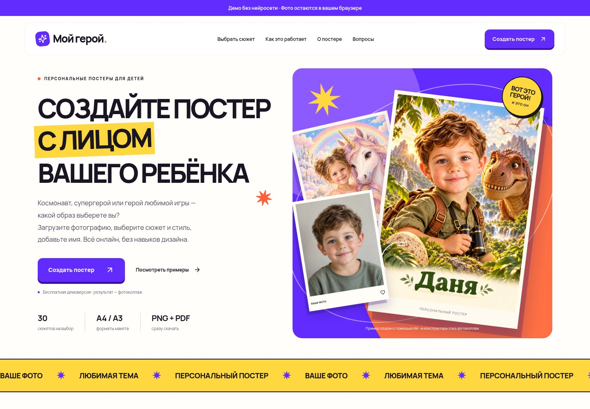
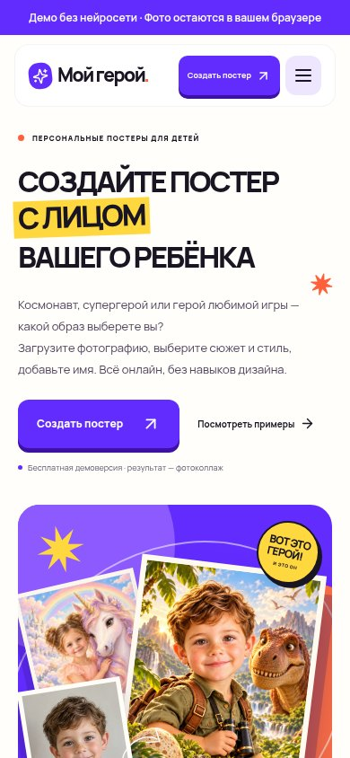

МОЙ ГЕРОЙ · 29 ОКТЯБРЯ 2026
Сразу понятно,
что можно создать.
Создайте постер с лицом вашего ребёнка
Обновлены тексты главной: что такое персональный постер, как выбрать тему и стиль, добавить имя и пожелание, посмотреть результат и скачать файл. Дизайн, изображения и анимации сохранены.
Открыть обновлённый сайт ↗Компьютер


Телефон


Выбор по возрасту сохранён, все темы доступны. Галерея показывает 12 заранее подготовленных примеров. Сейчас в конструкторе можно попробовать демонстрационный фотоколлаж; нейросетевая перерисовка, заказ печати и доставка пока не подключены.
В примерах — вымышленные персонажи, созданные с помощью ИИ. Реальные фотографии пользователей не публикуются. Другие обновления →